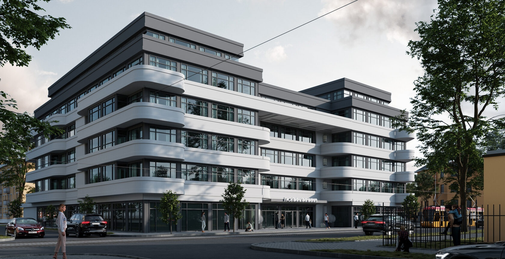

KOTOV ARCHITECTS · КалининградАрхитектура.
Архитектура.
Для бизнеса и жизни.
Архитектурная мастерская в Калининграде, проекты по России. Коммерческие объекты, многоквартирные дома, виллы и интерьеры.
Обсудить проект
ПРИМЕРЫ РЕШЕНИЙРазные объекты.
Разные объекты.
Единый подход к проекту.
Назначение здания определяет его архитектуру, планировку и детали. Рассмотрите проекты бюро и обсудите исходные данные и задачи вашего объекта.
Обсудить проект